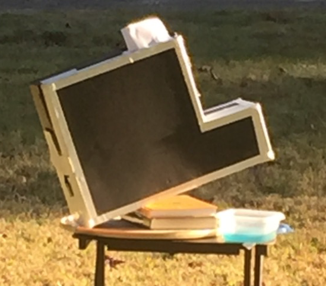
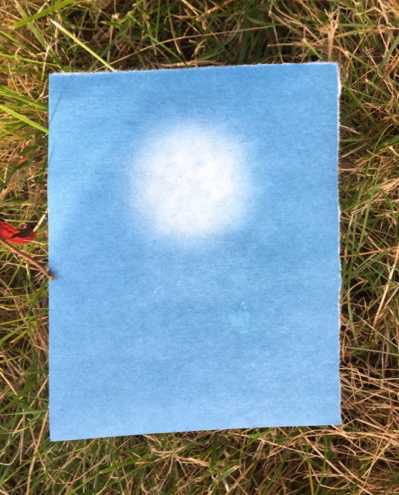
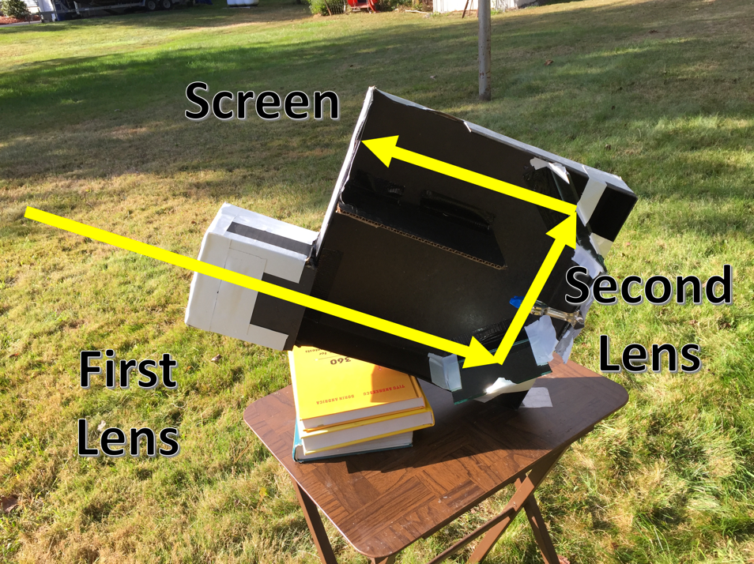
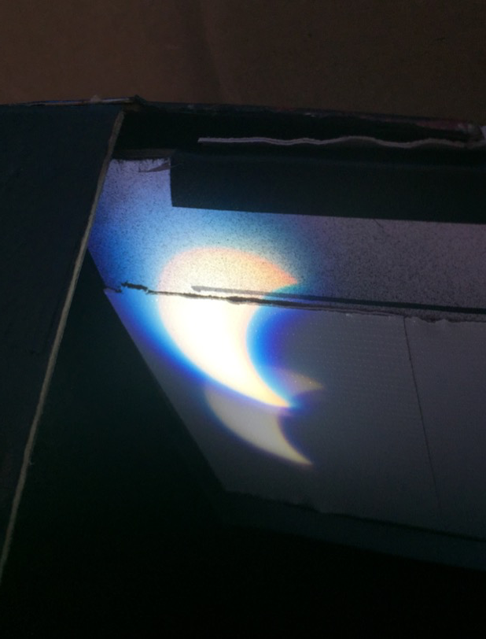
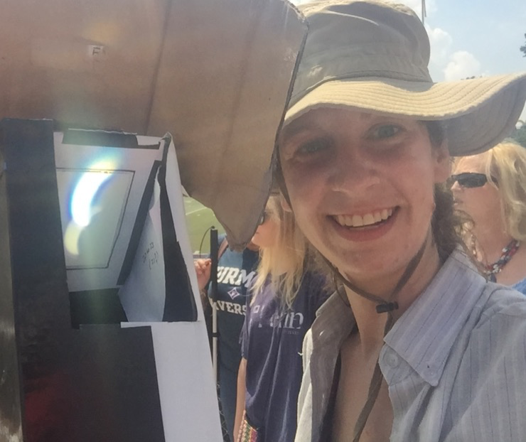

Introduction
Continuing with the theme of creating for myself crude versions of technology already perfected by the professionals, I built a black-and-white camera. I used photo-sensitive paper to take a picture of the brightest object I could think of, the sun.
Check out my camera:
It can take pictures.
Here's the inside.
I used it to view the eclipse.
That's all for now!
